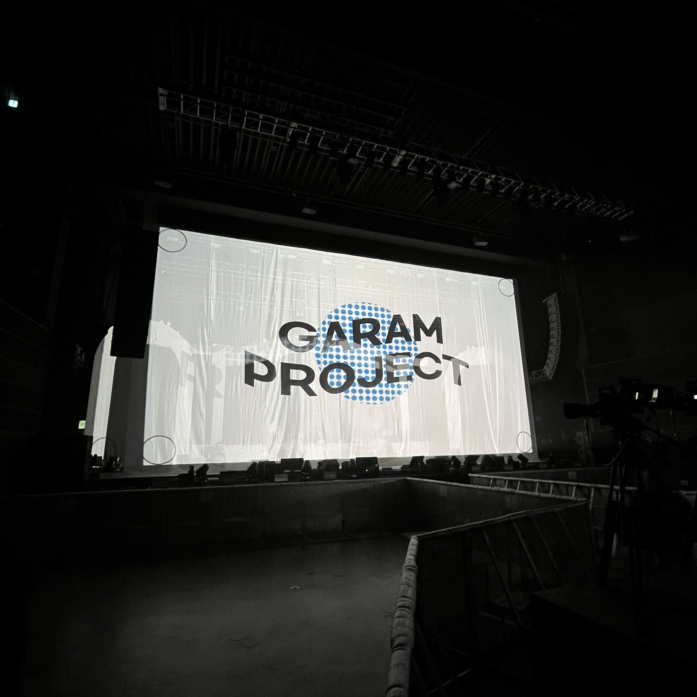
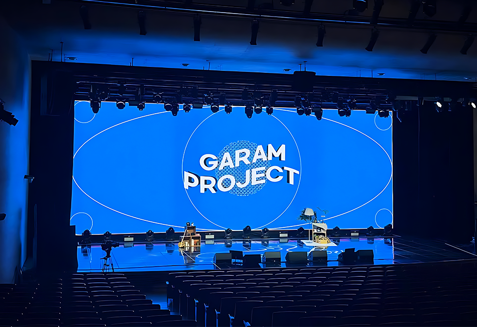
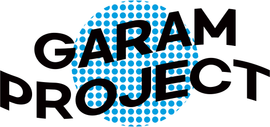
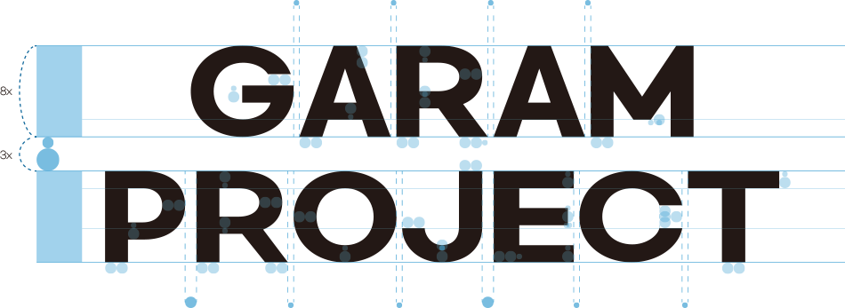
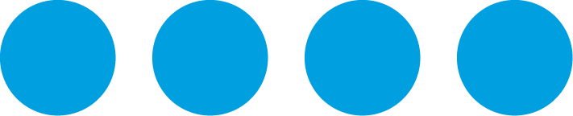
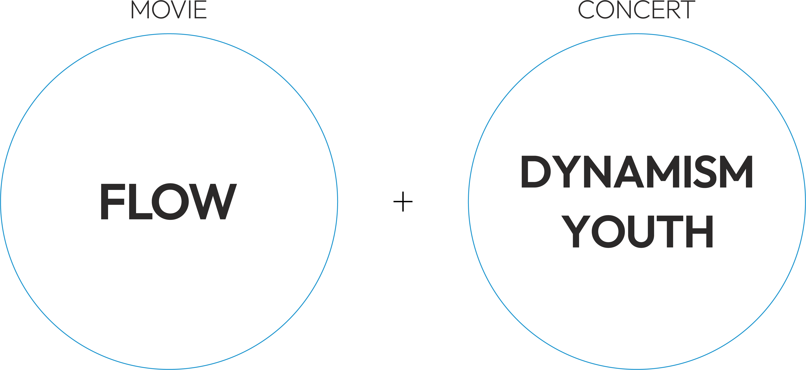

LOGO DESIGN - Garam Project, VJ Studio
VJ 스튜디오, 가람 프로젝트, ”garam project”의 로고 프로젝트를 진행했습니다.
명함, 팀복, 스크린 등 온・오프라인의 다양한 환경을 고려하며 회사의 아이덴티티를 적용했습니다.

Brand Logo

Design Concept
영상의 특징인 "흐른다"와 공연의 특징인 "젊은", "역동성"을 강조했습니다.
타입 로고는 모던함과 젊음의 느낌을 전달할 수 있는 산세리프 서체로 제작했습니다.


Design Concept
실시간으로 영상을 믹싱・연출하는 VJ의 특성을 고려했습니다.
영상의 특성인 "흐른다"와 공연의 특징인 "역동성"과 "젊음"를 키워드로 로고 작업을 진행했습니다.

Client work
02.2020 - 08.2020
Tool : Photoshop, Illustrator, Lightroom
← back previous page